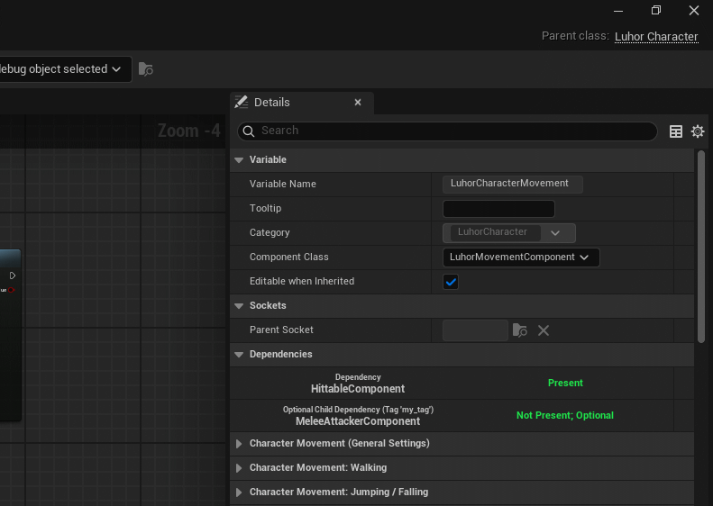

CompDep
Working with Components in Unreal Engine is part of the standard workflow.
Unreal, however, lacks any real tools to manage inter-component dependencies. This plugin was a custom solution I wrote for a
project where inter-component dependencies were everywhere, and we were getting frustrated at the lack of enforced, editor-time dependencies.
The plugin provides a way for defining dependencies both in visual scripting and in raw C++, and then displaying them either on individual components:

or in bulk for all blueprints:
This plugin proved incredibly handy in speeding up our team's specifically component-based workflow.
Creating this, I learned a lot about the Unreal editor; namely how the entire UI is built up, how Blueprint assets are structured, how the engine generates actual code from these assets, and how to access all of this properly.
On top of that, listening to what the other developers in my team actually wanted and implementing the tool
in a way that helped them increase their productivity was also very important.